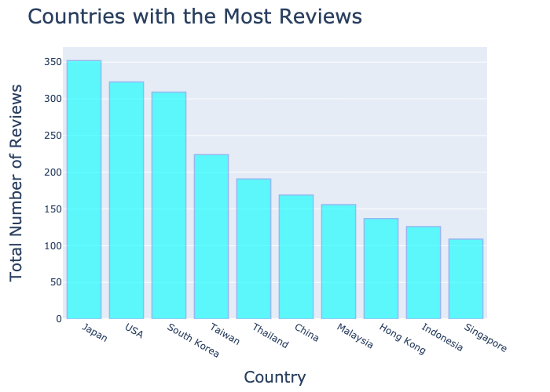

COUNTRIES WITH THE MOST RAMEN REVIEWS:

After seeing how the review scores (Stars) were distributed, I wanted to understand which countries contributed the most reviews of Ramen. My original hypothesis before I began was that countries that located in the Asian contitnent would have the most reviews since Ramen originated from this area of the world. However, I wanted to see if there were any countries outside of the asian continent that showcased ramen popularity. For the analysis of this graph, I grouped the dataframe by Country and performed a count of the Reviews. I then used a bar graph to visualize the results from the grouped dataframe. As I expected, most of the top countries were from Asia but the one interesting outcome from the groupby anaylsis showed that the United States was the second highest country for reviews of ramen. This information was not to surprising since American suisine does represent a melting pot of various cultures and instant ramen is a very popular and quick meal. Furthermore, I would expect the united States to be amongst the highest reviews for other popular meals from around the world.